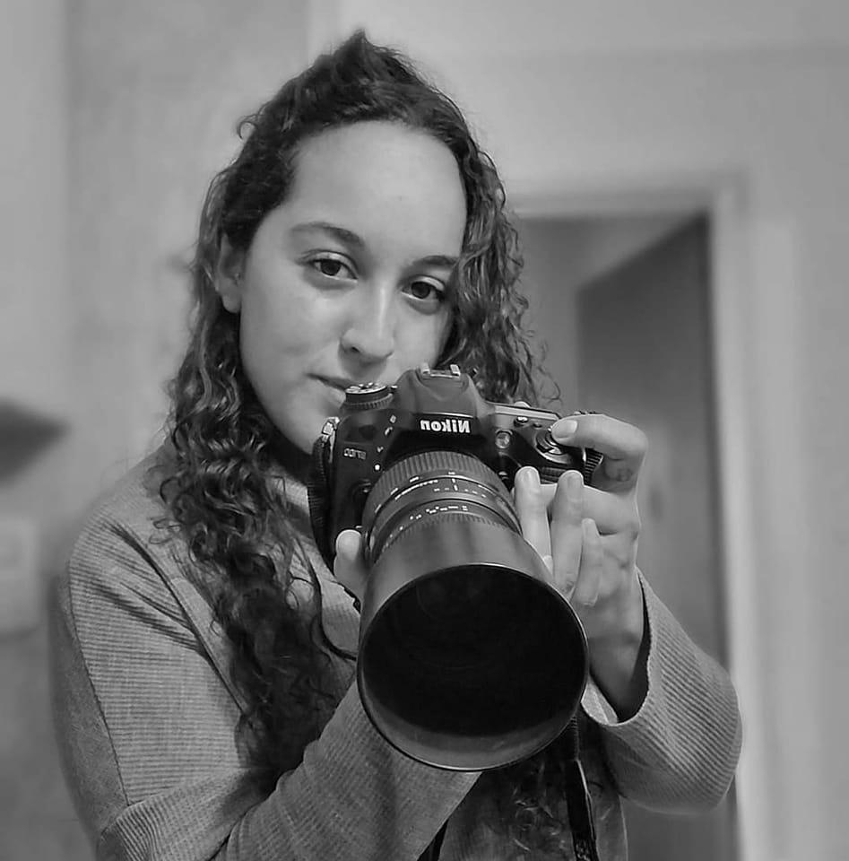

Hola, soy Lucila. Estoy estudiando programación y me especializo en desarrollo web, gestión de redes sociales y diseño de contenido visual. Hace más de siete años que trabajo como fotógrafa deportiva y community manager, y hoy estoy enfocada en sumar habilidades técnicas que me permitan crear experiencias digitales completas, funcionales y con personalidad. Me apasionan la tecnología, el arte, la fotografía y todo lo que implique comunicar de forma creativa. Disfruto aprender cosas nuevas, resolver problemas, trabajar en equipo y sumar valor desde lo que hago. Apunto a proyectos dinámicos y colaborativos, especialmente en modalidad remota, donde pueda combinar lo visual con lo funcional, y lo estratégico con lo humano. Si estás buscando a alguien que se involucre con compromiso, ideas frescas y muchas ganas de crear... ¡acá estoy! Podés escribirme cuando quieras para charlar tu proyecto, estoy abierta a nuevas oportunidades.
